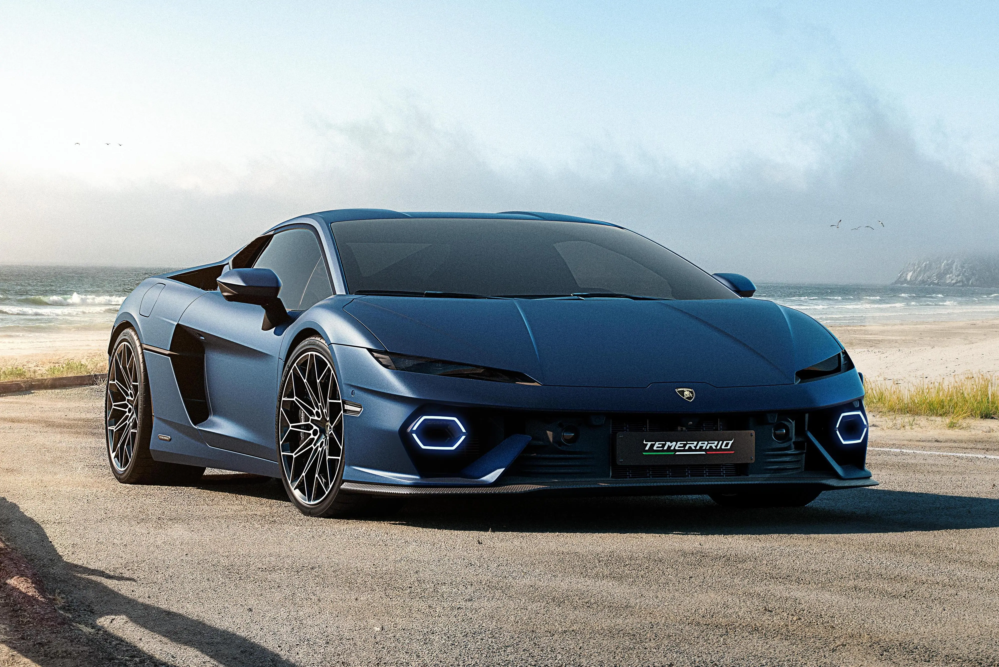
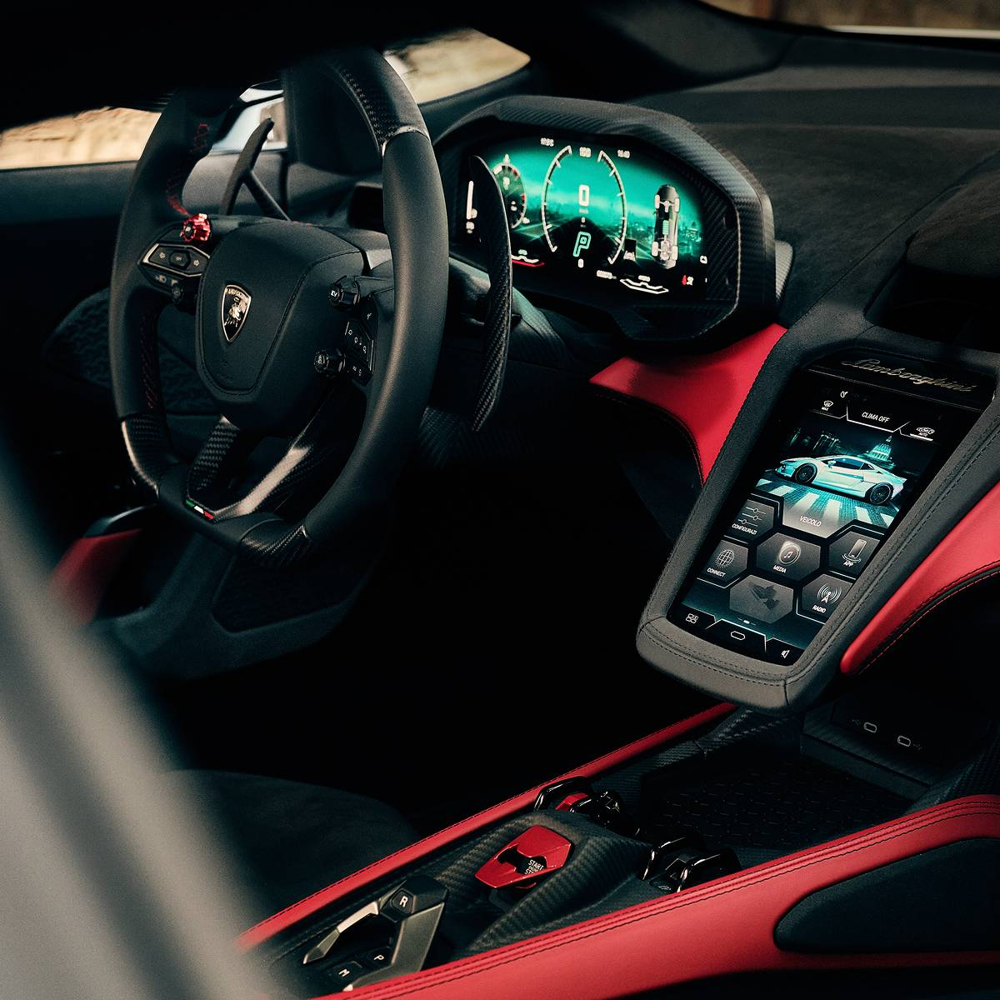
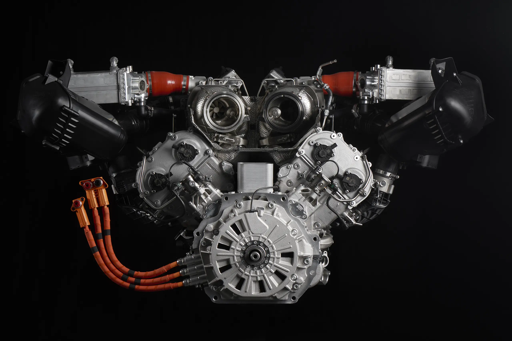
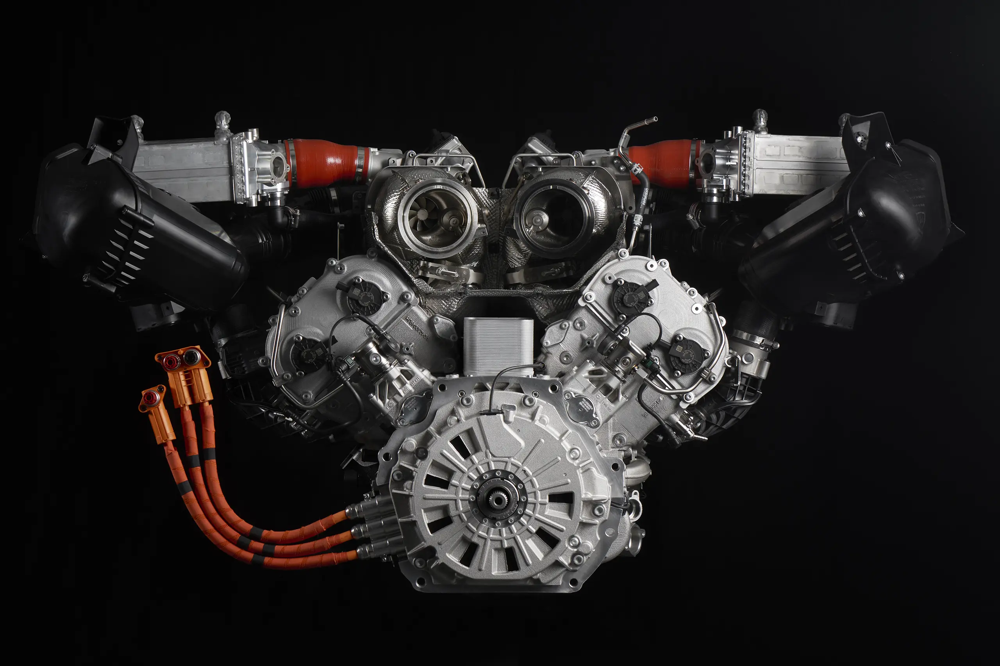
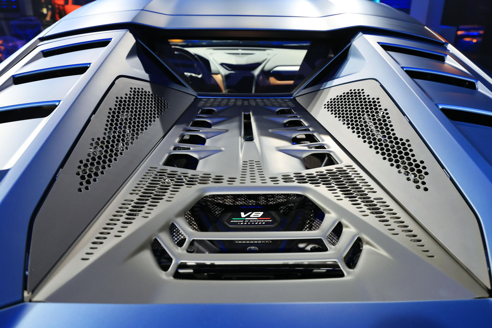

A Lamborghini apresentou ao mundo o Temerario durante a Monterey Car Week, na Califórnia, em 23 de agosto de 2024.
O modelo chega como sucessor do lendário Huracán e simboliza um marco na estratégia de eletrificação da marca italiana,
dentro do plano Direzione Cor Tauri, que visa integrar desempenho extremo à sustentabilidade.
O grande destaque do Temerario está em sua motorização. Pela primeira vez, a Lamborghini abandona o tradicional V10 aspirado
e adota um conjunto híbrido inovador, formado por um motor V8 biturbo desenvolvido para girar até 10.000 rpm e três motores elétricos.
Essa combinação resulta em 920 cavalos de potência e 800 Nm de torque, colocando o supercarro em um patamar único de desempenho.
Os números impressionam: o Temerario acelera de 0 a 100 km/h em apenas 2,7 segundos e alcança a velocidade máxima de 343 km/h.
Além disso, a integração entre motor a combustão e propulsores elétricos garante torque imediato e aceleração linear, entregando a sensação
de um motor aspirado clássico, mas com muito mais força e eficiência.
O design também segue a tradição da Lamborghini de unir agressividade e sofisticação. O exterior combina linhas herdadas do Huracán
com novos elementos poligonais, em especial o uso de hexágonos, característica marcante da marca. No interior, o cockpit foi inspirado
no Revuelto, trazendo telas modernas, ergonomia aprimorada e um ambiente voltado à experiência de condução. Haverá ainda uma versão
“Alleggerita”, mais leve graças ao uso extensivo de carbono e com aerodinâmica otimizada para oferecer ainda mais desempenho nas pistas.
No mercado, o Temerario chega para enfrentar rivais como a Ferrari 296 GTB, superando-a em potência, torque, aceleração e velocidade máxima.
Enquanto a Ferrari entrega 830 cv, o novo Lamborghini oferece 920 cv, além de 60 Nm extras de torque. Mesmo com essa superioridade,
o modelo deve custar a partir de £260.035 no Reino Unido, valor considerado competitivo dentro da categoria de supercarros híbridos.
O lançamento tem também um peso histórico: o Temerario é o primeiro Lamborghini com motor V8 central desde a Jalpa de 1981 e o segundo
modelo da linha HPEV (High Performance Electrified Vehicle), após o Revuelto e o SUV Urus SE. Ele representa não apenas a evolução técnica
e estética da Lamborghini, mas também a transição definitiva para uma nova fase, em que eletrificação e potência extrema caminham juntas.
Com mais de 900 cavalos, aceleração brutal, design marcante e uma proposta híbrida de última geração, o Lamborghini Temerario se firma
como um dos supercarros mais ousados e inovadores já lançados pela marca uma verdadeira vitrine do futuro da alta performance.



|

 

|
|  | |